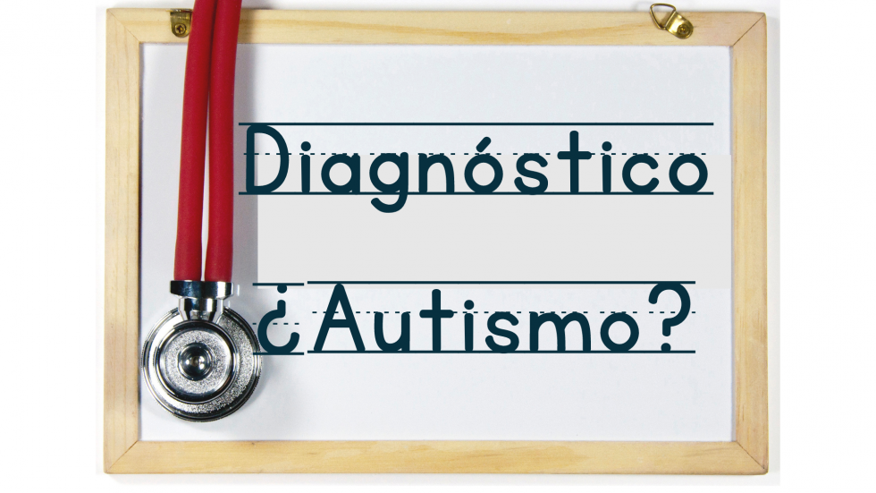

DIAGNOSTICO
El diagnóstico siempre debe realizarlo un equipo especialista en el tema
Normalmente los tests los lleva a cabo un psicólogo, y el diagnóstico se emite en conjunto con un psiquiatra y/o neurólogo. A continuación les dejamos algunos formularios del sitio espectroautista.info para poder realizar una previa a la evaluación. Realizados correctamente, pueden ayudar a descartar rápidamente la pertenencia al espectro, o invitar a realizar una evaluación "más en serio".
Planillas de diagnóstico para niños: